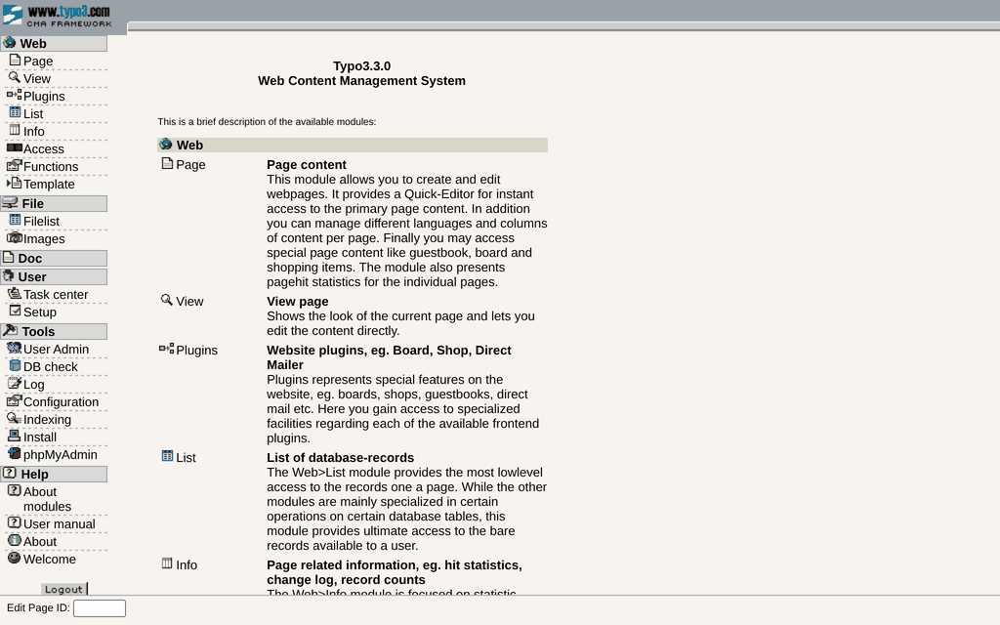
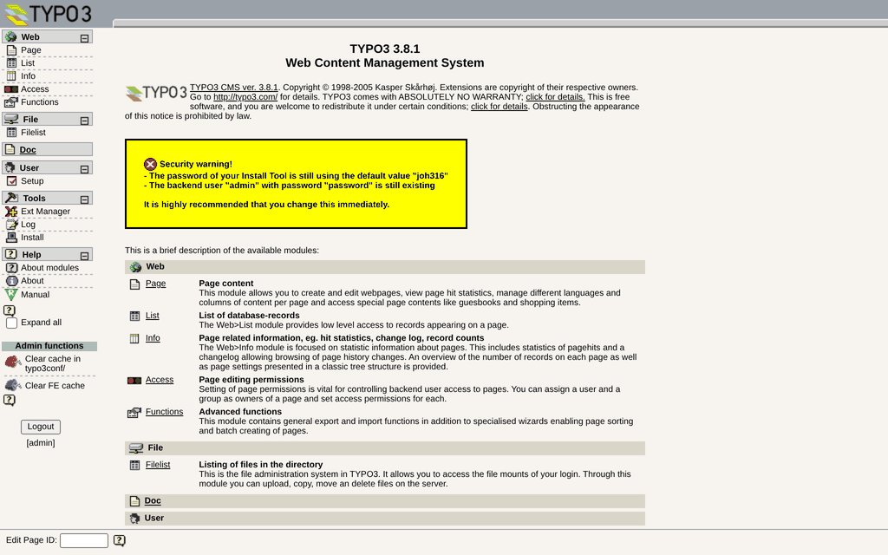

Run TYPO3 as it was · Five releases
A trip down memory lane, 2002 to 2017.
Five real TYPO3 releases, from 3.3.0 in 2002 to 6.2.31 in 2017, still run today. They are not mock-ups. They are the original archives, checksum-verified, on PHP 4.4.9 for 3.3.0 and PHP 5.6 for the rest. Start in 2002 and watch the mark change.
The exhibits
-
TYPO3 3.3.0 2002-06-03
TYPO3 3.3.0 Backend - Microsoft Internet Explorer_□xBackForwardStopAddresshttp://127.0.0.1:8033/typo3/Go
DoneInternet- Runs on
- PHP 4.4.9, MySQL 5.5
- Known for
- The oldest publicly available release
-
TYPO3 3.8.1 2005-11-14
TYPO3 3.8.1 Backend - Microsoft Internet Explorer_□xBackAddresshttp://127.0.0.1:8038/typo3/Go
DoneInternet- Runs on
- PHP 5.6.40 (PHP4 in Browser), MySQL 5.5
- Known for
- The last release before 4.0
-
TYPO3 4.0.13 2009-07-02
TYPO3 4.0.13 Backend - Windows Internet Explorer_□x★TYPO3 4.0.13 BackendCapture pendingTYPO3 4.0.13 backendDoneInternet- Runs on
- PHP 5.6.40, MySQL 5.5
- Known for
- The only 4.0 release the feed lists
-
TYPO3 4.5.40 2015-02-19
TYPO3 4.5.40 Backendx_□xCapture pendingTYPO3 4.5.40 backend- Runs on
- PHP 5.6.40, MySQL 5.5
- Known for
- UTF-8 by default, the first LTS
-
TYPO3 6.2.31 2017-04-18
TYPO3 6.2.31 Backendx_□xCapture pendingTYPO3 6.2.31 backend- Runs on
- PHP 5.6.40, MySQL 5.5
- Known for
- The last public 6.2 LTS
Try it in your browser
TYPO3 3.3.0 and 3.8.1 run in your own tab, on PHP 4.4.9 compiled to WebAssembly. There is nothing to install, and nothing runs on a server. Your site is kept in your browser until you reset it. The later releases follow. How it works.
Or run one yourself
All five releases run on your own machine, with Docker Compose 2.23.1 or newer and one downloaded file.
curl -fsSL -o typo3-3.3.yaml https://raw.githubusercontent.com/mteu/typo3-throwback/main/3.3/compose.yaml docker compose -f typo3-3.3.yaml up -d # then open http://127.0.0.1:8033/
These stacks are insecure by design. They carry years of known, unpatched remote code execution bugs. Keep them on loopback and never expose them. Read the documentation.